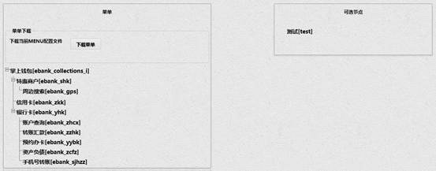
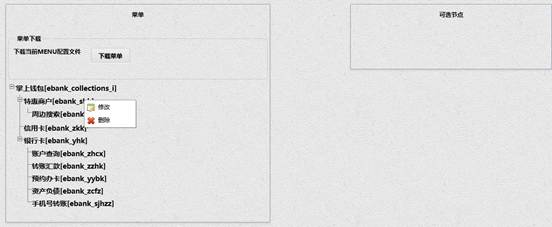
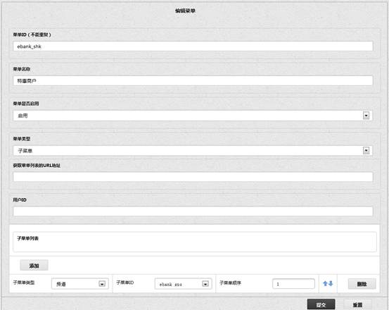
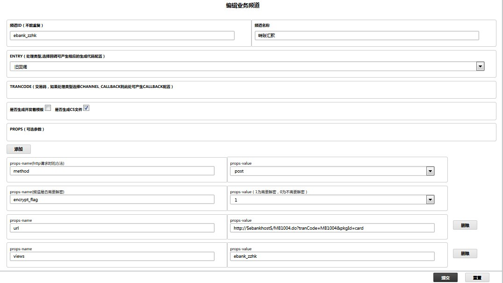
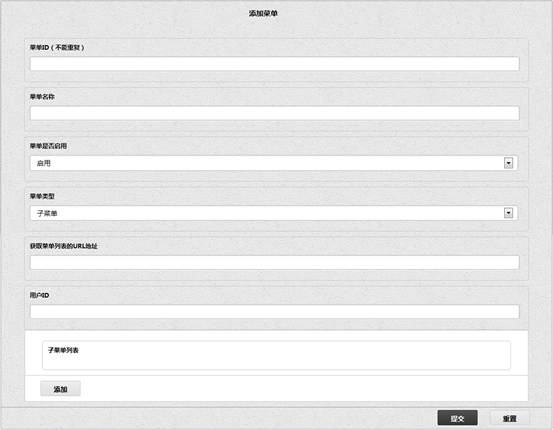
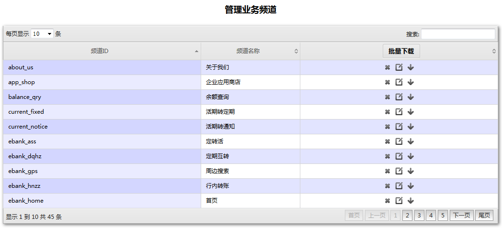
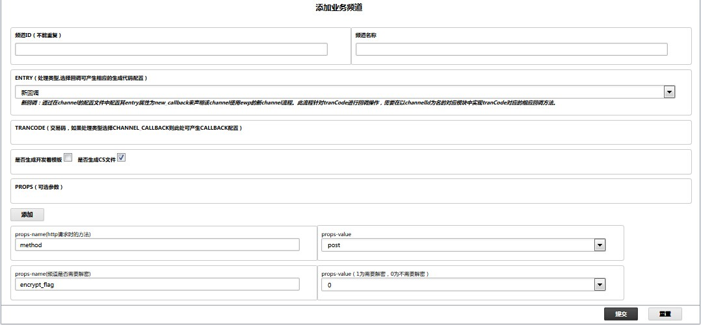
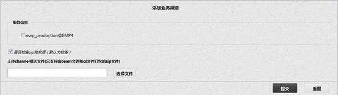

在业务频道管理模块中，我们为 EWP 服务中的菜单和业务频道提供了展现界面和配置界面。
业务频道和菜单是 EWP 运行时最为核心的业务参数。业务频道指客户通过手机渠道对外提供的一个业务单元，对应为 EWP 中的一个 channel（级别等同于行内转账），它的集合为一个 collection（菜单）。菜单可分为根节点菜单和子菜单。根节点菜单表示入口菜单（级别等同于 ebank_collections_ipad），子菜单是普通的 collection 菜单，即宫格界面显示的菜单（级别等同于转账汇款）。
用户点击菜单展现二级菜单进入当前项目菜单展现界面，该界面分左右两个区域，左侧为当前项目菜单的树形结构，右侧是尚未添加到当前应用的子菜单。
若是新项目尚未配置菜单和业务频道，菜单展现界面如图所示：
若当前项目已配置好菜单和业务频道，界面如图所示：

点击树形结构的"-"，该节点的全部子节点收起，点击树形结构的"+"，该节点次级子节点展开显示。
在任意菜单或频道节点上直接点击鼠标左键，或点击鼠标右键再选择修改进入菜单或频道编辑界面（菜单编辑界面与添加菜单界面一致，频道编辑界面与添加业务频道界面唯一区别是编辑界面的 TRANCODE 没有 callbacks），点击右键界面如图所示：

在任意菜单节点上直接点击鼠标左键，或点击鼠标右键再选择修改进入菜单编辑界面，如图所示：

可以对该菜单信息进行编辑，其中菜单ID和菜单类型不可编辑，添加时会判断ID不允许重复，可以对其菜单名称，是否启用，子菜单信息及顺序进行编辑，点击重置按钮可以对除ID以外的其他输入信息进行重置。点击【提交】按钮后会在菜单展现界面看到编辑后的菜单。
菜单当选择启用时在手机客户端可见，选择不启用时，该菜单在手机客户端不可见。
获取菜单列表的URL地址: 此字段不用填写，目前做过的项目中没有用到此字段。
用户ID：此字段不用填写，目前做过的项目中没有用到此字段。
子菜单列表可以对菜单添加子菜单和业务频道，调整子菜单或业务频道的顺序，删除已添加的子菜单或业务频道等等。
在任意业务频道节点上直接点击鼠标左键，或点击鼠标右键再选择修改进入频道编辑界面，如图所示：

可以对该频道信息进行编辑，其中频道ID不可编辑，添加时会判断ID不允许重复，可以对其频道名称，ENTRY 处理类型，TRANCODE 名称，method 方法，encrypt_flag 属性，url值，views 值进行编辑，点击添加按钮可以添加一对新的 props-name 和 props-value 参数，可以勾选是否生成开发者模板和cs文件选项，点击重置按钮可以对除ID以外的其他输入信息进行重置。
关于 ENTRY 说明：
（1）新回调：通过在channel的配置文件中配置其entry属性为new_callback来声明该channel使用ewp的新channel流程。此流程针对tranCode进行回调操作，需要在以channelId为名的对应模块中实现tranCode对应的相应回调方法。
（2）旧回调：通过在channel的配置文件中配置其entry属性为channel_callback来声明该channel使用ewp的channel代理机制来处理channel请求，此流程同先前项目中流程。
（3）适配: 通过在channel的配置文件中配置其entry属性为channel_adapter来声明该channel使用ewp的适配流程。此流程针对tranCode进行回调操作，需要在以channelId为名的对应模块中实现tranCode对应的相应回调方法。
编辑业务频道界面与添加业务频道界面的区别：
添加业务频道界面 TRANCODE 添加时，有 callback 选项，该选项的作用是后台生成样例代码，但编辑业务频道界面没有 callback 选项，因为后台管理页面尚未做到对已有代码分析并修改相应代码，只是初始生成一个模板文件而以。
点击鼠标右键再选择删除，分三种情况：
在菜单下载区域，点击【下载菜单】按钮，菜单的配置信息以 menu.conf 文件形式下载到本地，配置信息包含频道 channel 和菜单 collection 的配置信息，比如：
{channels,[[{id,"ebank_zzhk"},
{app,"ebank"},
{name,[232,189,172,232,180,166,230,177,135,230,172,190]},
{entry,undefined},
{views,undefined},
{props,[{url,"http://$ebankhost$/MB1004.do?tranCode=MB1004&pkgId=card"},
{method,post},
{views,"ebank_zzhk"},
{encrypt_flag,1}]},
{state,1}]}.
{collections,[[{id,"ebank_yhk"},
{app,"ebank"},
{name,[233,147,182,232,161,140,229,141,161]},
{url,undefined},
{user_id,undefined},
{type,0},
{state,1},
{items,[[{item_id,"ebank_zzhk"},{item_type,1},{menu_order,2}],
[{item_id,"ebank_zhcx"},{item_type,1},{menu_order,1}],
[{item_id,"ebank_zcfz"},{item_type,1},{menu_order,4}],
[{item_id,"ebank_yybk"},{item_type,1},{menu_order,3}],
[{item_id,"ebank_sjhzz"},
{item_type,1},
{menu_order,5}]]}]
用户点击添加菜单二级菜单进入添加菜单界面，界面如图所示:

填写菜单ID（此ID不允许重复），菜单名称，菜单是否启用，菜单类型，获取菜单列表的URL地址，用户ID，也可以同时添加子菜单信息并编辑顺序等等，点击重置按钮可以对输入信息进行重置。点击【提交】按钮提示添加成功，之后会在菜单展现界面看到新添加的菜单。
如果新添加的菜单类型是根菜单，可以为其添加子菜单和频道，添加成功后直接显示在菜单展现界面左侧菜单列表中，如果新添加的菜单类型是子菜单，为避免出现死循环仅可以为其添加频道，添加成功后将显示在菜单展现界面右侧可选节点列表中，从可选节点进入编辑界面也仅可以添加频道，因为此时尚不能确定父菜单是什么，如果为b子菜单添加a子菜单，再将b子菜单添加到a中就会出现死循环，此处只能过滤自己，不能过滤父节点，但一旦加到左侧的菜单列表中，就可以明确父节点是什么了，为他添加子菜单也允许了，添加子菜单中把本身和全部的父节点都过滤掉即可。
菜单当选择启用时在手机客户端可见，选择不启用时，该菜单在手机客户端不可见，目前该选项不生效。
获取菜单列表的URL地址: 此字段不用填写，目前做过的项目中没有用到此字段。
用户ID：此字段不用填写，目前做过的项目中没有用到此字段。
子菜单列表可以对菜单添加子菜单或业务频道，调整子菜单或业务频道的顺序，删除已添加的子菜单或业务频道等等。
用户点击管理业务频道二级菜单进入管理业务频道界面，界面如图所示:

该界面列出当前项目中添加的全部业务频道，可以对这些业务频道进行删除，编辑，导出业务频道ZIP包，也可以通过点击列表标题栏进行排序。
编辑业务频道界面与添加业务频道界面的区别参见菜单展现章节描述。
点击任意频道后的删除按钮，弹出提示框 "你确定要删除该频道？"，点击确定按钮后提示 "频道删除成功！"，点击取消按钮取消删除操作。
点击任意频道后的编辑按钮，进入对应频道的编辑界面，编辑过程及编辑业务频道界面与添加业务频道界面的区别参见菜单展现章节描述。
导出业务频道ZIP包的功能是为开发人员提供的，开发人员利用添加业务频道功能中的回调生成部分基础框架代码，在本地环境中基础代码之上完成对应业务需求的代码，编译后从该界面，即管理业务频道界面导出已经编译后的完整代码，再通过上传业务频道界面将导出的 beam 和 cs 包的 zip 包上传到实际生产环境，管理人员就可以将该业务频道添加到任意菜单在手机客户端上展现。
管理业务频道的导出功能，添加业务频道功能都是为开发人员提供的，在生产环境不会部署，上传业务频道功能可以由管理后台的维护人员或开发人员上传到生产环境的服务器上，因此需要在生产环境部署。
点击任意频道后的导出按钮，弹出提示框 "将下载的zip包中包含以下文件： 1. ebin/***.beam，2. cs/***/***.cs"，点击取消按钮取消导出操作，点击下载按钮可以将下载的zip包保存在本地，为上传业务频道做准备。
用户点击添加业务频道二级菜单进入添加业务频道界面，界面如图所示:

填写频道ID（此ID不允许重复），频道名称，ENTRY 处理类型，TRANCODE，method, encrypt_flag 等参数，勾选是否生成开发者模板和cs文件，点击重置按钮可以对输入信息进行重置。点击【提交】按钮提示添加成功，之后会进入管理业务频道界面看到新添加的业务频道。
关于ENTRY说明参见菜单展现章节描述。
用户点击上传业务频道二级菜单进入上传业务频道界面，界面如图所示:

输入 app 名称，比如输入 ebank，点击刷新按钮，会列出包含该 app 的全部节点，默认全部勾选，不允许更改，对全部节点上传业务频道。
上传 channel 相关文件时，首先检查文件类型，若为非 zip 包形式给出提示 "上传文件类型错误，请检查！"，若文件类型为 zip 包，当勾选 "是否检查zip包来源" 复选框时（默认为检查），检查该 zip 包是否通过管理后台的导出功能下载的，若是通过管理后台导出的，允许提交；若非管理后台导出的，提示 "上传文件来源错误，请检查!"。当不勾选 "是否检查 zip 包来源" 复选框时，提示 "该文件未检查zip包来源，可能会存在风险，是否继续上传该文件？"，如果点击确定继续上传，点击取消按钮放弃上传操作。点击【重置】按钮后，选择的文件清空。
若上传的业务频道已经在当前项目的服务器上存在，会提示 "该业务频道已经存在，是否进行覆盖？" 如果点击确定继续上传，点击取消按钮放弃上传操作。